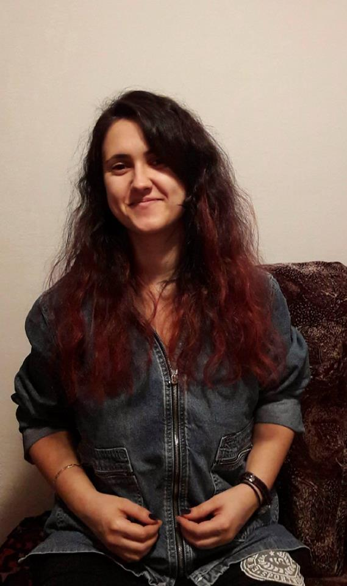

Exista diverse evenimente sociale/culturale/sportive/artistice unde pot participa doar anumite persoane. Evenimentele sunt organizate pentru elevi de liceu, studenti la facultate, voluntari etc. Pentru aceste evenimente inchise biletele de acces se pot cumpara doar cu cash de la organizatori sau de la persoanele responsabile vanzarii de bilete pe care organizatorii ii nominalizeaza. Nu exista si o platforma online la care pot avea access mai multe persoane interesate de astfel de evenimente de unde isi pot procura bilete online.
Solutia propusa de echipa noastra este de a creea o platforma ce va facilita procurarea biletelor. Astfel cumparatorul nu mai este nevoit sa se intalneasca cu vanzatorul de bilete la scoala, facultate sau atunci cand cel care vinde nu este ocupat.
Persoanele care doresc sa participe la astfel de evenimente se incadreaza in limitele de varsta 14-26 ani.
Nu exista o competitie directa, deoarece site-uri precum: www.iabilet.ro, www.bilete.ro, www.eventim.ro vand bilete online pentru evenimente mari carora le sunt facute publicitate nationala.
Vanzarea biletelor online pentru evenimente locale cu un numar mic de participanti.
Utilizatori unici: 600
Numar de bilete vandute lunar : 250-350
Numar de evenimente lunar: 2-4
In prima faza nu exista cheltuieli pentru proiectare si dezvoltare.
Un procentaj din pretul biletelor.
Experienta membrilor echipei Fast Tickets de-a lungul facultatii ne-a aratat ca organizatiile studentesti duc o lipsa acuta de metode de organizare a vanzarii biletelor pentru evenimentele lor. Mai mult decat atat, aceasta problema este vizibila atat in randul elevilor de liceu cat si in cadrul oricarui eveniment de mici dimensiuni.
Pentru a ataca problema identificata, echipa Fast Tickets propune o platforma online/aplicatie mobila prin care utilizatorii interesati pot achizitiona bilete cu un minim efort necesar in timp ce organizatorii evenimentului pot urmari intr-un mod eficient evolutia cumpararii biletelor. De asemenea, prin intermediul aplicatiei mobile utilizatorii pot fi la curent cu noile evenimente si pot achizitiona bilete cat mai simplu.
Intr-o prima faza, target-ul nostru este reprezentat de catre organizatorii de evenimente din cadrul Universitatii Politehnica din Bucuresti. Dupa o prima validare in cadrul universitatii, urmatorul pas este identificarea unor organizatori de evenimente de mica amploare din orasul Bucuresti pe care sa ii contactam cu scopul obtinerii unui parteneriat de lunga durata.
Experienta atat de student cat si de membru in cadrul unor organizatii care se ocupa de organizarea de evenimente ne-a aratat ca este nevoie de o metoda cat mai simpla si eficienta prin care sa se faca achizitionarea de bilete atat pentru cei care organizeaza cat si pentru cei care vor sa cumpere.
Prin expunerea la mediul academic, am luat contact cu cei care conduc diverse organizatii studentesti si care se ocupa de organizarea diverselor petreceri si evenimente precum balul bobocilor sau balul de absolvire. Prin intermediul platformelor de socializare si a prietenilor din facultate.
Prin distribuirea a doua chestionare, unul pentru clientii directi (organizatorii de evenimente) si unul pentru participanti.
Lucrul in echipa pentru gasirea raspsunsurilor la intrebarile privind viabilitatea produsului software a intarit si mai mult increderea echipei in acest produs. In urma colectarii si analizei raspunsurilor obtinute din chestionare, am ajuns la concluzia ca se pierd timp si resurse umane cu vanzarea biletelor pentru evenimente. In concluzie, acest proces poate fi automatizat prin intermediul platformei propuse.
Toate punctele anterioare au fost verificate, discutate si argumentate in detaliu de catre toti membrii echipei. Ideea si solutia au fost validate prin intermediul raspunsurilor colectate din chestionare.
1. Esti in vreo asociatie studenteasca? De cat timp faci parte din aceasta organizatie?
2. Cat dureaza sa vindeti biletele pentru evenimentele organizate de asociatia din care faci parte?
3. Care este cea mai mare problema pe care ai intampinat-o cand ai vandut bilete?
3.1 Poti sa imi zici si alte probleme pe care le-ai intampinat?
4. Cat de des organizati evenimente la care vindeti bilete?
5. Pana acum, a fost cineva care a pierdut biletul? Ce faceti in cazurile astea?
6. Ati vandut vreodata bilete online?Daca nu, din ce cauza nu ati facut asta?
1. Da, sunt intr-o organizatie studenteasca de 3 ani.
2. De obicei le punem la vanzare cu 15 zile inainte de eveniment, dar avem si evenimente la care dam bilete cu 3-4 zile inainte de eveniment.
3. Cred ca cea mai mare problema este stransul banilor, pentru ca trebuie sa ai mereu rest, iar oamenii nu vin niciodata cu bani exacti.
3.1 O mare problema a fost atunci cand s-a stricat imprimanta, exact in ziua cand trebuia sa punem biletele in vanzare. Am mai avut probleme mari cu faptul ca oamenii incercau sa copieze biletele. O alta problema a fost faptul ca nu aveam statistici despre oamenii care cumparau bilete.
4. Cred ca o data la 2-3 luni avem cate un eveniment care necesita bilete.
5. Din pacate in situatiile de genul nu avem ce sa facem si permitem accesul persoanelor respective la eveniment doar daca ne amintim ca le-am vandut biletul. Au fost si cazuri in care au venit persoane sa ne zica ca au cumparat bilete si nu ne-am amintit de ele, asa ca au fost nevoite sa cumpere un bilet nou.
6. Nu am vandut niciodata bilete noi. Nu am facut asta pentru ca nu am avut niciodata o platforma proprie, iar cele existente cereau comisioane foarte mari.
1. Da, sunt intr-o organizatie studenteasca de 5 ani.
2. Noi le punem intotdeauna la vanzare cu 7 zile inainte.
3. Cea mai mare problema pe care am intampinat-o a fost faptul ca multi oamnei veneau si isi cumparau bilete exact in ziua evenimentului, chiar cand incepea evenimentul. O alta problema majora este faptul ca oamenii care vand bilete trebuie sa aibe mereu bani ca sa ofere rest.
4. O data la 3 luni avem cate 2 astfel de evenimente.
5. Da, dar nu au fost foarte multi cei care au pierdut biletele si de cele mai multe ori ii lasam sa intre pentru ca ne aminteam ca au fost si au comparat bilete.
6. Am vandut o singura data bilete cu ajutorul platformei eventbite. A fost un eveniment foarte mare, iar cerinta de a le vinde prin aplicatie a venit din partea unui sponsor.
1. Da, sunt intr-o organizatie studenteasca doar de 1 an.
2. Mereu le punem la vanzare cu 2-3 saptamani inainte de eveniment, dar asta depinde de cat de mare este evenimentul.
3. O mare problema pe care am intampinat-o la vanzarea de bilete este resursa umana, care de obicei este putina si de cele mai multe ori, oamenii nu sunt dornici sa vanda bilete.
4. Cam o data la 2 luni avem un astfel de eveniment.
5. Nu, nu am intalnit pe nimeni care sa fi pierdut biletul. Noi suntem foarte stricti si ii atentionam mereu sa aibe grija sa pastreze biletele.
6. Nu, niciodata nu am folosit o platforma online ca sa vindem bilete, pentru ca era prea mare comisionul.
-> 20 de ani, student intr-un oras mare(Bucureti/Cluj/Timisoara)
-> face parte dintr-o organizatie studenteasca
-> Sa nu trebuiasca sa fie prezent cand se vand biletele
-> Sa isi promoveze evenimentul pe care il organizeaza asociatia din care face parte
-> Sa nu fie nevoit sa verifice autenticitatea biletelor la intrare
-> Imprimanta cu tus, ca sa poata imprima biletele
-> Verificarea autenticitatii biletelor
-> Imprimarea biletelor in orice moment
-> Oamenii care sa fie disponibili in orice moment sa vanda bilete
-> Sa aibe mereu sa dea rest, celor care vin sa cumpere bilete
1. As vrea sa nu trebuiasca sa am grija mereu la ce bani am la mine ca sa pot da rest in perioada evenimentelor.
2. As vrea sa nu fiu nevoit sa fiu fizic prezent pentru a vinde bilete.
3. As vrea sa nu fie nevoie sa tiparesc bilete.
Se autentifica in aplicatie -> Creeaza un eveniment -> Stabileste toate datele evenimentului si pretul biletelor -> Asteapta sa se vanda evenimentul, in timp ce este notificat cu date despre toate biletele vandute.
Aplicatia noastra se adreseaza in mare parte studentilor astfel ca organizatiile studentesti sunt cele care dau numarul de utilizatori. In prezent, in UPB se gasesc in jur de 10 organizatii care se ocupa de evenimentele adresate studentilor. Aceste organizatii se straduiesc in fiecare an sa ofere evenimente pentru aproximativ la 20 000 de studenti.
Analizand piata, s-au remarcat printre competitori urmatorii: iaBilet.ro , Eventim si LiveTickets .
iaBilet: Este un proiect de startup inceput in decembrie 2011 dupa o conversatie la o masa la un restaurant. Proiectul dorea sa existe pe piata un sistem adevarat si corect de ticketing pentru evenimente. Ei se axeaza atat pe relatiile b2b cat si b2c. Cota de piata in Romania este de peste 75% din organizatorii de evenimente.
Eventim: Companie care este lider de piata in Romania. Exista pe piata de 11 ani si sunt una din cele mai profitabile companii de ticketing online. Avantajul pe care il aduc este faptul ca se pot cumpara la foarte multe categorii de evenimente. eg. muzica-a-cappella, circ
LiveTickets: Firma ce vinde tickete electronice identificabile prin codul QR si care a castigat in 2016 Best Ticketing Company by Organiser's Choice.
In primul an dorim sa incepem sa organizam cat mai multe din evenimentele din UPB pentru a obtine cat mai multa incredere din partea studentilor. In cel de-al doilea an vrem sa ne extindem la alte universitati din Bucuresti. In cel de-al treilea an vom incerca sa depasim limita Bucurestiului prin a cauta clienti si din alte judete. In functie de evolutia vanzarilor acestei aplicatii, vom incerca in urmatorii ani sa ne orientam si catre alte tipuri de evenimente si de dimensiuni mai mari.
In UPB se gasesc aproximativ 10 organzatii studentesti si aproximativ 3-4 evenimente pe an (balul bobocilor, balul de absolvire, petreceri tematice) la care se vand intre 100 si 400 de bilete. Preturile pot varia in functie de eveniment, fiind cuprinse intre 20 de lei si 400 de lei (pentru balul de absolvire).
Avand in vedere cele de mai sus, intr-un an am putea vinde bilete cu valoare cuprinsa intre: 60.000 lei si 200.000 lei. Noi vom incasa un procent de 10% din aceste vanzari.
In primul an am putea obtine un profit cuprins intre: 6 000 lei si 20 000 lei.
In anii urmatori, avand in vedere ca ne dorim sa ne extindem si catre alte Universitati din Bucuresti, iar mai apoi in restul tarii, profitul va creste semnificativ.
Aceasta aplicatie in prima faza va fi folosita ca sa ne aduca un mic venit la salariile actuale, iar in timp ne dorim sa inovam in aceasta piata si sa fie atat de profitabila incat sa ne putem asigura traiul de pe urma profitului.
Pentru aceasta etapa noi ne-am axat pe construirea unui MVP care sa prezinte intr-un mod cat mai simplu ceea ce vrem sa facem cu business-ul nostru. Din acest motiv, MVP-ul are o interfata foarte intuitiva, fara reclame care sa iti distraga privirea de la scopul principal: cumparatul/vanzarea de bilete. Prin acest MVP noi vrem sa punctam viitorilor clienti usurinta cu care se pot loga in aplicatie, pot vedea toate evenimentele si cat de simplu isi pot cumpara bilete la diverse evenimente. Organizatorii de evenimente sigur vor ramane surprinsi cand vor vedea cat de usor pot crea un eveniment. Completarea campurilor dureaza maxim 1 minut (presupunand ca stie datele evenimentului). Tinand cont de faptul ca aplicatia va fi folosita in primul rand pentru evenimente mici si medii, care isi fac reclama in cadrul facultatilor sau prin intermediul retelelor de socializare, noi am eliminat toate layerele inutile pe care le contin competitorii nostri: adaugarea unei poze cu evenimentul sau o descriere foarte lunga pe care oricum nu o citeste nimeni.
MVP-ul poate fi accesat de aici. Pentru a putea fi testat de cat mai multi oameni, am creat doi user de test: username1: client si username2: organizer, ambii avand parola: parola
Raul PipisTeam leader raul.alex.pipis@gmail.com |
Theodora CiucaDeveloper ciucamariatheodora@gmail.com |
Alex AlbuProject Manager alexandrualbu95@gmail.com |
Andrei PetrisorDeveloper andrei1petrisor@gmail.com |

Irina PatularuDeveloper irinapatularu@gmail.com |